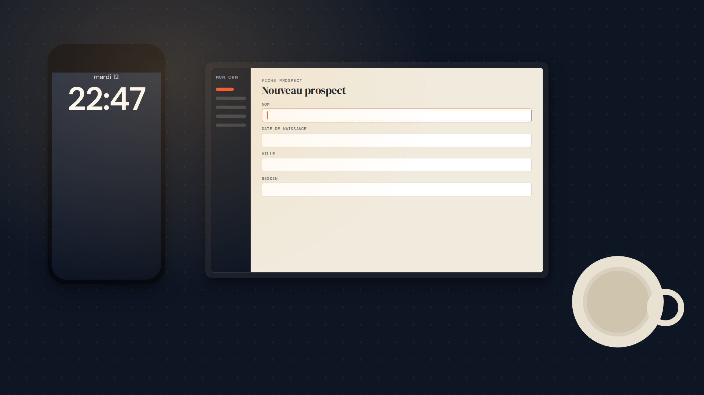
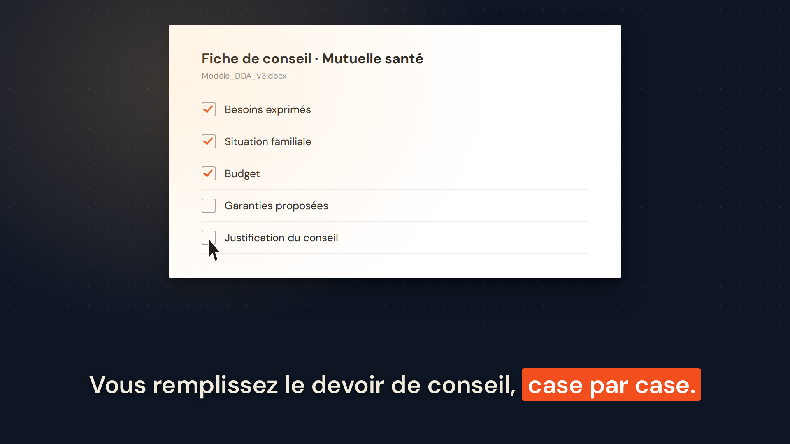
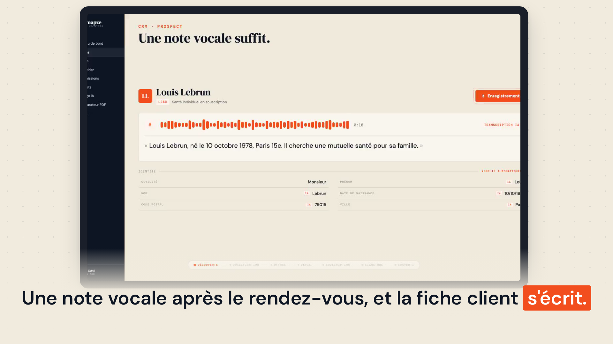
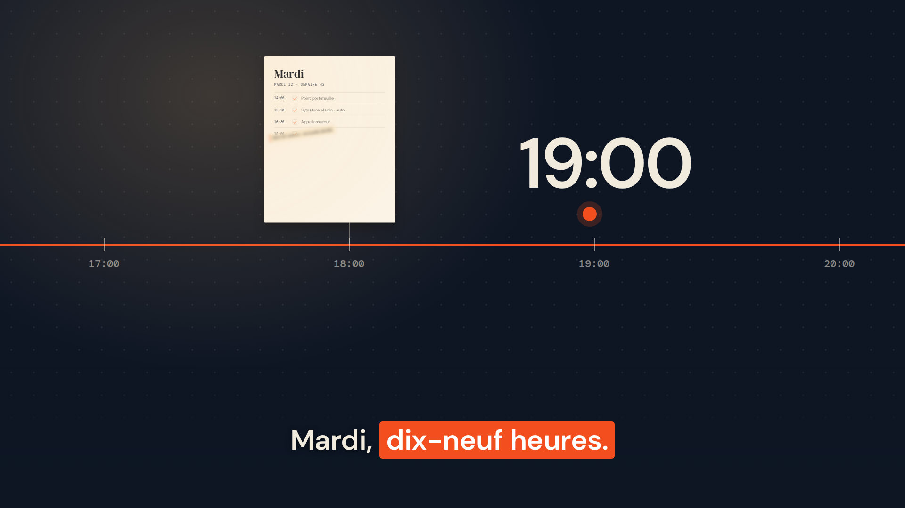
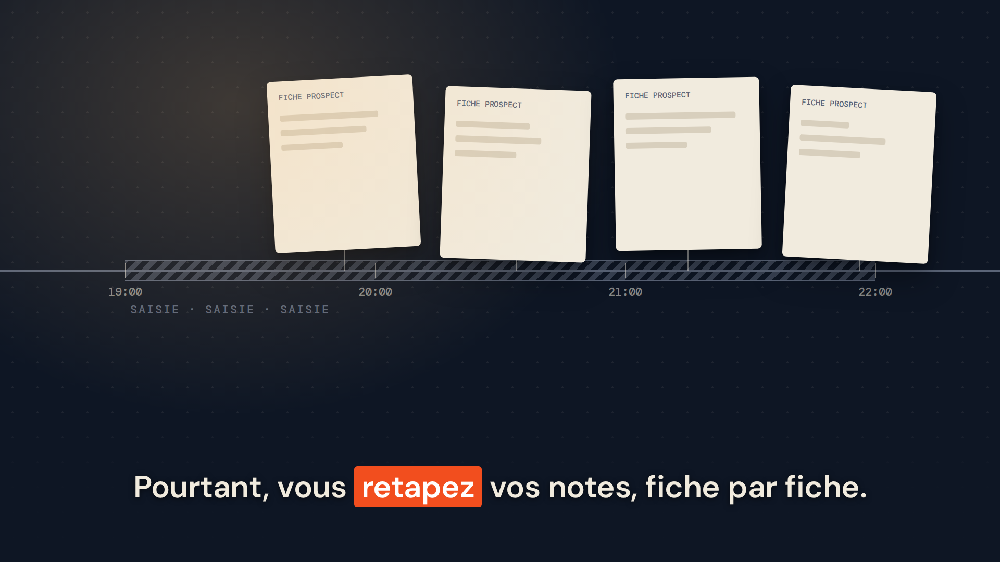
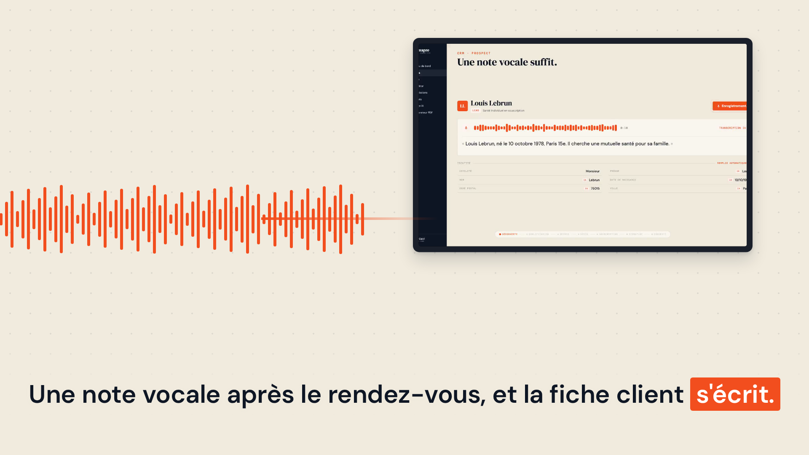
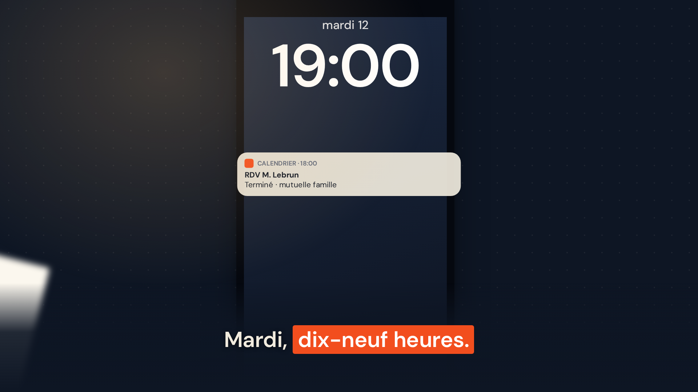
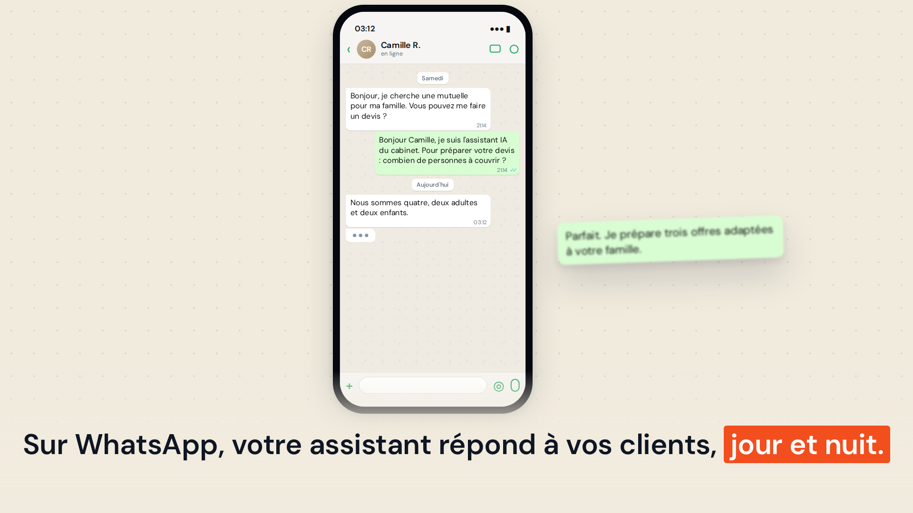

• Synapze • Trois directions
A « Le bureau du soir » recommandée · storyboard déjà écrit

A1 6.30 s · le gag : 22:47, fiche vide
A2 15.50 s · fiche de conseil, case par case
A3 25.50 s · le vrai écran Synapze se remplitB « Le fil de la soirée » une ligne du temps qui devient la voix

B1 0.80 s · 19:00 sur le fil
B2 11.50 s · la soirée hachurée, les fiches
B3 25.50 s · le fil devient l'ondeC « Tout dans le téléphone » voice-first, WhatsApp au centre

C1 0.80 s · l'écran verrouillé, 19:00 C2 17.50 s · samedi 21:14, sans réponse
C2 17.50 s · samedi 21:14, sans réponse
C3 31.00 s · WhatsApp répond, 03:12